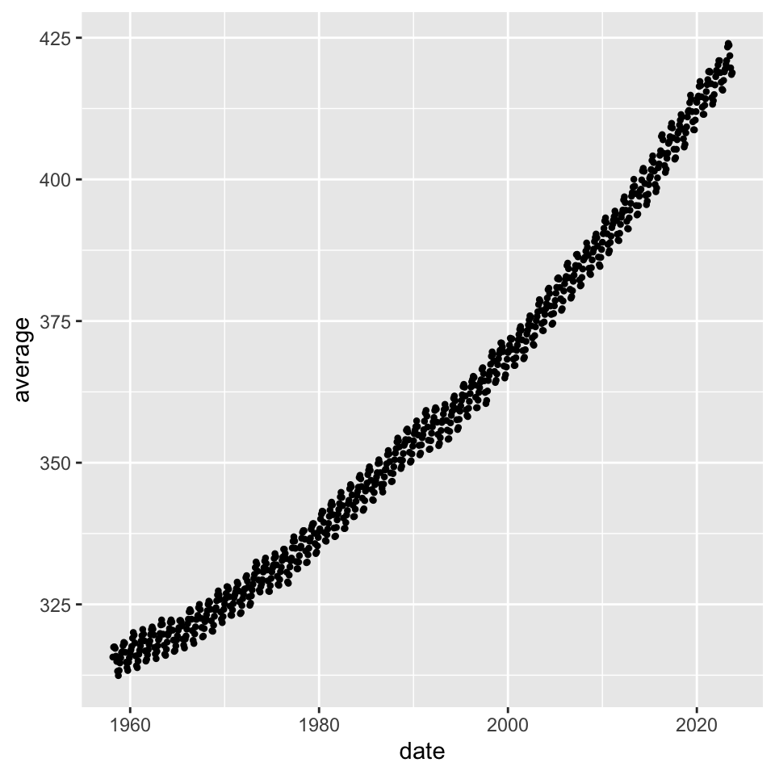
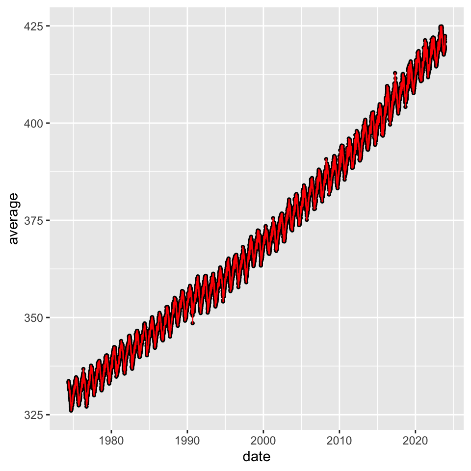

60 Zeitreihen (eng. time series)
Letzte Änderung am 21. November 2023 um 10:32:49
“Die Vergangenheit ist geschrieben, aber die Zukunft ist noch nicht in Stein gemeißelt.” — Jean-Luc Picard, Star Trek: The Next Generation

Bitte bei der Analyse von Zeitreihen gleich von Anfang an beachten!
Die Analyse von Zeitreihen kann sehr quälend sein, wenn dein Datumsformat nicht richtig ist. Bitte achte darauf, dass du in der Spalte mit dem Datum immer das gleiche Format vorliegen hast. Dann können wir das Format später richtig transformieren. Danach geht dann alles einfacher…
In diesem Kapitel wollen wir uns mit Zeitreihen (eng. time series) beschäftigen. Was ja auch irgendwie zu erwarten war, denn so heißt ja auch das Kapitel hier. Wir haben ganz einfach auf der \(x\)-Achse einer potenziellen Visualisierung die Zeit dargestellt. Wir wollen dann auswerten, ob es über den zeitlichen Verlauf einen Trend gibt oder wir ein gutes Modell für den Verlauf der Beobachtungen anpassen können. Es kann auch sein, dass wir zwei zeitliche Verläufe miteinander vergleichen wollen. Dabei haben wir dann aber meistens nicht einen super simplen Verlauf, sondern Spitzen oder Täler in den Daten, so dass wir hier die Daten entsprechend glätten (eng. to smooth) müssen.
In der Abbildung 60.1 sehen wir eine typische Zeitreihe, die in der klassischen Analyse von Zeitreihen erwartet wird. Mit erwartet wird miente ich, dass wir hier einen Messwert über eine längere Zeit beobachten und wir dabei eine zyklische Abfolge der Messwerte über die Zeit sehen. Wenn wir nicht lange genug etwas beobachten, dann können wir so ein zyklisches Verhalten nicht erkennen. Wenn wir nur über einen sehr kurzen Zeitraum die Temperatur messen, dann werden wir kaum in der Lage sein, ein Muster zu erkennen. Dann müssen wir uns eventuell überlegen unsere Zeitreihe anders auszuwerten oder aber nur als Abbildung darzustellen. Bei Zeitreihen geht es also zum einen um die Vorhersage zukünftiger Ereignisse anhand schon gemessener Werte der Zeitreihe oder aber um die Darstellung und den Vergleich von zeitlichen Verläufen. Wir werden uns beide Fälle einmal anschauen. Deshalb sind es hier auch recht viele Beispiele geworden.
Was sollst du lesen, wenn du mehr wissen willst als hier in dem Kapitel steht? Besonders hier gilt, über Zeitreihen wurden und werden Bücher geschrieben. So tiefgreifend kann ich hier nicht die Zusammenhänge darstellen. Aber vermutlich so, dass du dann in anderen Büchern weiterlesen kannst. Ich würde dir Forecasting: Principles and Practice als erstes Buch empfehlen. Du hast hier sogar YouTube Videos für die wichtigsten Inhalte. Dann würde ich den Kurs STAT 510: Applied Time Series Analysis als umfangreichen, theoretischen Hintergrund empfehlen. Du findest dort auch teilweise R Code etwas in den Skript vergraben. Es gibt reichlich R Pakete, die ich teilweise tiefer vorstellen werden. Mit den R Paketen {tktime}, {fable} und {modeltime} gibt es neben den built-in Paketen einiges zur Auswahl. Ich werde hier aber auch alle drei Pakete einmal vorstellen und diskutieren. Mehr geht natürlich immer deshalb kann ich dir da noch die Übersicht auf dem Big Book of R – Time Series Analysis and Forecasting empfehlen. Dort findest du dann noch mehr frei verfügbare Literatur und auch das ein oder andere R Paket, was genau in der entsprechenden Litertaur genutzt und besprochen wird. Wenn du noch mehr lesen willst, dann kann ich dir folgende Literatur empfehlen. Robert u. a. (2006) liefert eine gute Übersicht über die Anwendung in R, ist aber schon etwas älter. Das Gleiche gilt dann auch für das Buch von Chan und Cryer (2008) und Cowpertwait und Metcalfe (2009). Dennoch bilden alle drei Bücher die Grundlagen der Analysen von Zeitreihen super ab. Für eine Abschlussarbeit sollten die Quellen also allemal reichen.
Wenn es um Zeitreihen geht, dann ist die Formatierung der Spalte mit dem Datum eigentlich so ziemlich das aufwendigste. In dem Kapitel Zeit und Datum findest du dann nochmal mehr Informationen dazu. Achte bitte darauf, dass du eine einheitlich formatierte Datumsspalte hast, die sich nicht im Laufe der Zeilen ändert. Wenn das der Fall ist, dann musst du meist händisch nochmal die Daten anpassen und das ist meistens sehr aufwendig.
Wenn es um Daten geht, dann gibt es natürlich eine Reihe von möglichen Quellen. Wenn es sehr viele Daten seinen sollen, die meistens einen zeitlichen Bezug haben, dann empfehle ich die Webseite Our World in Data. Dort gibt es so viele zeitliche Verläufe, da eigentlich alles dort als zeitlicher Verlauf dargestellt wird. Schau doch einfach dort mal rein.
Weitere Tutorien für die Analyse von Zeitreihen
Wir immer kann ein Kapitel hier nicht das umfangreiche Analysieren von Zeitreihen abarbeiten. Daher auch wie in anderen Kapiteln schon eine Liste von Literatur und Links, die mich für dieses Kapitel hier inspiriert haben. Nicht alles habe ich genutzt, aber vielleicht ist für dich was dabei, was dir dann mehr konkret hilft als dieses Kapitel.
- Forecasting: Principles and Practice – Wenn ich keine Zeit hätte mich durch sehr viele Tutorien zu arbeiten, dann würde ich vermutlich mit diesem Online-Buch starten. Es ist alles drin was man braucht um die Zeitreihenanalyse tiefer zu verstehen, als dass ich es hier aufarbeiten kann. Wenn du dann noch das R Paket
{tktime}nutzt, passt dann wieder alles. - STAT 510: Applied Time Series Analysis – Ein umfangreicher Kurs der Penn State - Eberly College of Science. Hier ist dann der R Anteil sehr eingeschränkt bzw. schon etwas älter aber dafür sind die Erklärungen umfangreicher als in diesem Kapitel. Es lohnt sich also nochmal dort für weitere Beispiele einmal reinzuschauen.
- Welcome to a Little Book of R for Time Series! – Du findest hier eine sehr gute Übersicht über die Möglichkeiten einer Zeitreihenanalyse mit der Möglichkeit Vorhersagen durchzuführen. Teilweise sind die Funktionen etwas veraltet, ich würde da eher das R Paket
{timetk}empfehlen. Der Text um die Funktionen herum ist immer noch lesenswert. - timetk for R – Hier hast du das aktuelle R Paket, welches ich auch in diesem Kapitel teilweise vorstelle. Leider gibt es hier aber nicht sehr viel Erklärtext, daher musst du dich dann auf andere Quellen verlassen. Die Funktionen und die Anwendbarkeit ist aber sehr schön.
- 14 Time Series Analysis – Du findest hier neben der klassischen Analyse von Zeitreihen noch Informationen zu anderen Möglichkeiten der Analyse von Zeitreihen. Eingebettet ist das Kapitel zu Zeitreihen in ein umfangreiches Buch über die Analyse von Daten und der Programmierung.
- Analysing Time Series Data – Modelling, Forecasting and Data Formatting in R – Du findest hier nochmal ein gutes und in sich kompaktes Tutorium zu der Zeitreihenanalyse. Hier findest du dann auch mehr erklärenden Text. Auch werden die Datumsformate nochmal genauer auseinander genommen und erklärt. Für den Einstieg sicherlich eine gute Quelle.
Ich habe mich auch wieder bemüht ein Beispiel für eine Zeitreihe zu finden, die ich als Abbildung einmal zerforschen kann. Damit sich hier nicht so viel verdoppelt, schaue auch einmal gerne in das Kapitel zur Visualisierung von Daten rein, dort sammle ich alle Beispiele zum Zerforschen. Hier also eine Abbildung, bei der es um eine Zeitreihe und der Trächtigkeit von Kühen geht.
60.1 Genutzte R Pakete
Wir wollen folgende R Pakete in diesem Kapitel nutzen.
pacman::p_load(tidyverse, magrittr, janitor, see, readxl,
xgboost, tidymodels, modeltime, forecast,
lubridate, plotly, zoo, timetk, xts,
corrplot, GGally, conflicted)
conflicts_prefer(dplyr::filter)
conflicts_prefer(magrittr::set_names)
conflicts_prefer(plyr::mutate)
conflicts_prefer(dplyr::slice)Am Ende des Kapitels findest du nochmal den gesamten R Code in einem Rutsch zum selber durchführen oder aber kopieren.
60.2 Daten
Im Sommer 1987 maßen die Ranger des Yellowstone-Nationalparks die Zeit zwischen den Ausbrüchen des Old Faithful Geysirs. Dieser Geysir ist für seine relativ regelmäßigen Ausbrüche bekannt, aber wie du dir vorstellen kannst, ist der Geysir keine Uhr. Ein Ziel bei der Erfassung der Zeiten war es, eine Möglichkeit zu finden, den Zeitpunkt des nächsten Ausbruchs vorherzusagen, um den Touristen, die auf einen Ausbruch warten, die Wartezeit zu erleichtern. Die Daten in Minuten für \(n=107\) fast aufeinanderfolgende Wartezeiten lauten dann wie folgt.
erupt <- c(78, 74, 68, 76, 80, 84, 50, 93, 55, 76, 58, 74, 75, 80, 56, 80, 69, 57,
90, 42, 91, 51, 79, 53, 82, 51, 76, 82, 84, 53, 86, 51, 85, 45, 88, 51,
80, 49, 82, 75, 73, 67, 68, 86, 72, 75, 75, 66, 84, 70, 79, 60, 86, 71,
67, 81, 76, 83, 76, 55, 73, 56, 83, 57, 71, 72, 77, 55, 75, 73, 70, 83,
50, 95, 51, 82, 54, 83, 51, 80, 78, 81, 53, 89, 44, 78, 61, 73, 75, 73,
76, 55, 86, 48, 77, 73, 70, 88, 75, 83, 61, 78, 61, 81, 51, 80, 79)
Schau dir auch die Daten für \(CH_4\) \(N_2O\) und \(SF_6\) an.
Leider braucht as.Date() immer einen Tag.
co2_monthly_tbl <- read_csv("data/co2_mm_mlo.csv", skip = 40) %>%
mutate(month = str_pad(month, 2, pad = "0", side = "left"),
date = parse_date_time(str_c(year, month), "ym"))
co2_daily_tbl <- read_csv("data/co2_daily_mlo.csv", skip = 32, col_names = FALSE) %>%
set_names(c("year", "month", "day", "decimal date", "average")) %>%
mutate(month = str_pad(month, 2, pad = "0", side = "left"),
date = parse_date_time(str_c(year, month, day), "ymd"))ggplot(co2_monthly_tbl, aes(date, average)) +
geom_point2()
ggplot(co2_daily_tbl, aes(date, average)) +
geom_point2() +
geom_line(color = "red")

{timetk} und der Funktion plot_time_series(), die durch die Option .interactive = TRUE intern dann {plotly} aufruft.Einen weiteren Datensatz, den wir uns anschauen wollen, ist ein Datensatz zu der Milchleistung von Kühen stammt aus dem Tutorium Analysing Time Series Data – Modelling, Forecasting and Data Formatting in R. Wir haben hier ein idealisierten Datensatz vorliegen, so dass wir uns nicht mit dem Datumsformat quälen müssen. Der Datensatz wurde auch für die Analysen künstlich erstellt. Daher ist die Milchleistung auch nicht als echt anzusehen. Wir haben es hier im Prinzip mit simulierten Daten zu tun.
milk_tbl <- read_csv("data/monthly_milk.csv") In der Tabelle 60.1 siehst du nochmal einen Auszug aus den Milchdaten. An jedem Tag haben wir die Milchleistung für eine Kuh aufgetragen. Ich würde hier davon ausgehen, dass es sich um die mittlere Leistung handelt. In Wirklichkeit sind die Daten vermutlich etwas komplizierter und wir haben nicht nur eine Leistungsbewertung pro Tag für eine Kuh. Aber für diese Übersicht soll es reichen.
| month | milk_prod_per_cow_kg |
|---|---|
| 1962-01-01 | 265.05 |
| 1962-02-01 | 252.45 |
| 1962-03-01 | 288 |
| 1962-04-01 | 295.2 |
| … | … |
| 1975-09-01 | 367.65 |
| 1975-10-01 | 372.15 |
| 1975-11-01 | 358.65 |
| 1975-12-01 | 379.35 |
60.3 Das Datumsformat
Wenn wir von Zeitreihen sprechen dann sprechen wir auch von dem Datumsformat. Eine Zeitreihe ohne eine richtig formatierte Datumsspalte macht ja auch überhaupt keinen Sinn. Es ist eigentlich immer einer ewige Qual Daten in das richtige Zeitformat zu kriegen. Deshalb hier vorab einmal die folgende Abbildung, die nochmal die Wirrnisse des Datumsformat gut aufzeigt.

Wichtig ist, dass wir das richtige Datumsformat haben. Siehe bitte dazu auch das Kapitel Zeit und Datum. Das einzig richtige Datumsformat ist und bleibt eben Jahr-Monat-Tag. Häufig ist eben dann doch anders, so dass wir uns etwas strecken müssen um unser Format in das richtige Format zu überführen. Bitte beachte aber, dass du auf jeden Fall einheitlich dein Datum einträgst. Am besten auch immer zusammen mit dem Jahr, dass macht vieles einfacher. Wie immer gibt es auch noch das Tutorium zu Date Formats in R und natürlich das R Paket {lubridate} mit dem Einstieg Do more with dates and times in R.
Wir werden uns jetzt einmal am Beispiel die Transformation der Datumsformate in den jeweiligen Daten anschauen. Je nach Datensatz müssen wir da mehr oder weniger machen. Auch hier, wenn du weniger Arbeit möchtest, dann achte auf eine einheitliche Form der Datumsangabe
Konvertierung von verschiedenen Datumsformaten in R
Das R Paket {timetk} liefert dankenswerterweise Funktionen für die Konvertierung von verschiedenen Zeitformaten in R. Deshalb schaue einmal in die Hilfeseite Time Series Class Conversion – Between ts, xts, zoo, and tbl und dann dort speziell der Abschnitt Conversion Methods. Leider ist Zeit in R wirklich relativ.
60.4 Visualisierung
60.4.1 Die Milchdaten
Um die Milchdaten in der Abbildung 60.4 darzustellen nutzen wir die Funktion plot_time_series() aus dem R Paket {timetk}. Eigentlich ist es ein Zusammenschluss von {ggplot} und {plotly}. Wenn du die Option .interactive = TRUE wie ich setzt, dann bekommst du einen semi-interaktiven Plot durch {plotly} wiedergegeben. Mehr Informationen erhälst du dann auf der Hilfeseite von timetk zu Visualizing Time Series. Wie immer wenn du so generische Funktionen nutzt, musst du schauen, ob dir die Abbildung so gefällt. Du verlierst hier etwas Flexibilität und erhälst dafür aber schneller deine Abbildungen.
Wir erkennen ganz gut, dass wir hier einen Effekt der Saison oder aber der Jahreszeit haben. Wir haben zyklische Peaks der Milchleistung über das Jahr verteilt. Gegen Ende unserer Zeitreihe sehen wir aber eine Art Plateau der Milchleistung. In der folgenden Analyse wollen wir einmal schauen, ob wir die zukünftige Milchleistung anhand der bisherigen Daten vorhersagen können.
milk_tbl %>%
plot_time_series(month, milk_prod_per_cow_kg, .interactive = TRUE){timetk} und der Funktion plot_time_series(), die durch die Option .interactive = TRUE intern dann {plotly} aufruft.co2_monthly_tbl %>%
plot_time_series(date, average, .interactive = TRUE){timetk} und der Funktion plot_time_series(), die durch die Option .interactive = TRUE intern dann {plotly} aufruft.60.5 Analysen von Zeitreihen
Bis jetzt haben wir uns die Visualisierung von Zeitreihen angeschaut. Häufig reicht die Visualisierung auch aus, wenn es um die Darstellung von Temperaturverläufen in einer Abschlussarbeit geht.
60.5.1 Definitionen und Überblick
In dem folgenden Abschnitt möchte ich gerne einmal einen Überblick über die wichtigsten Begriffe in der Analyse von Zeitreihen geben. Jetzt geht es also los mit der “richtigen” Zeitreihenanalyse. Teilweise sind es etwas speziellere Begriffe, so dass ich hier erstmal etwas zu den Begriffen schreibe und dann die einzelnen Begriffe nochmal tiefer erkläre. Als vertiefenden Einstieg kann ich hier auch das Buch “Forecasting: principles and practice” von Hyndman und Athanasopoulos (2018) empfehlen. Hier gibt es dann auch eine Webseite mit Videos zu dem Buch. Denn so ausführlich kann ich das Thema Zeitreihenanalyse dann doch nicht in einem Kapitel bearbeiten.
- Stationarität (eng. stationarity)
-
Eine gängige Annahme bei vielen Zeitreihenverfahren ist, dass die Daten stationär sind. Das klingt etwas seltsam, denn eigentlich soll sich doch was über die Zeit verändern. Wie kann dann eine Vorbedingung an Zeitreihen sein, dass Zeitreihen stationär sind? Ein stationärer Prozess hat die Eigenschaft, dass sich der Mittelwert, die Varianz und die Autokorrelationsstruktur im Laufe der Zeit nicht ändern. Wir sprechen hier also von statistischen Eigenschaften über den Zeitverlauf.
- Autokorrelation
-
Wenn wir Zeitreihen \(t_1\) und \(t_2\) vorliegen haben, so zeigt die Korrelation \(\rho(t_1, t_2)\), wie sehr sich die zwei Zeitreihen ähneln. Die Autokorrelation beschreibt, wie ähnlich die Zeitreihe \(t_1\) sich selbst ist. Damit beschreibt die Autokorrelation die inhärente Ähnlichkeit einer Zeitreihe. Anhand der Werte der Autokorrelationsfunktion können wir erkennen, wie stark sie mit sich selbst korreliert. Bei jeder Zeitreihe ist die Korrelation bei Lag/Delay = 0 perfekt, da man dieselben Werte miteinander vergleicht. Wenn du deine Zeitreihe verschiebst, wirst du feststellen, dass die Korrelationswerte abnehmen. Wenn die Zeitreihe aus völlig zufälligen Werten besteht, gibt es nur eine Korrelation bei lag = 0, aber keine Korrelation überall sonst. Bei den meisten Datensätzen/Zeitreihen ist dies nicht der Fall, da die Werte im Laufe der Zeit abnehmen und somit eine gewisse Korrelation bei niedrigen Lag-Werten besteht.Damit kann die Autokorrelationsfunktion die Frequenzkomponenten einer Zeitreihe aufzeigen.
- ARIMA Modell
-
Wir nutzen zur Analyse von Zeitreihen das ARIMA Modell (abk. autoregressive integrated moving average, deu. autoregressiver gleitender Durchschnitt). Das ARIMA Modell ist dabei eine Erweiterung schon existierender Modelle und wird sehr häufig für die Analyse von Zeitreihen genutzt. Als wichtigste Anwendung gilt die kurzfristige Vorhersage. Das ARIMA Modell besitzt einen autoregressiven Teil (AR-Modell) und einen gleitenden Mittelwertbeitrag (MA-Modell). Das ARIMA Modell erfordern eigentlich stationäre Zeitreihen. Eine stationäre Zeitreihe bedeutet, dass sich die Randbedingungen einer Zeitreihe nicht verändern. Die zugrunde liegende Verteilungsfunktion der gemessenen Werte über die Zeitreihe muss zeitlich konstant sein. Das heißt konkret, dass die Mittelwerte und die Varianz zu jeder Zeit gleich sind. Gewisse Trends lassen sich durch ein ARIMA Modell herausfiltern.
- Exponential smoothing
-
Alternative zu ARIMA https://otexts.com/fpp3/expsmooth.html
- Lag (deu. Zeitverzögerung)
-
Mit eng. lag ist im Wesentlichen eine Verzögerung gemeint. Betrachte eine Folge von Zeitpunkten. Bei einem Lag von 1 vergleichst du die Zeitreihe mit einer verzögerten Zeitreihe. Du verschiebst die Zeitreihe um 1 Wert, bevor du sie mit sich selbst vergleichst. So gehst du dann für gesamte Länge der Zeitreihe vor. Wir haben nun eine Autokorrelationsfunktion für das Lag 1 vorliegen. Wenn wir also eine Zeitreihe \(t\) vorliegen haben und das Lag 1 berechnen sollen, dann entfernen wir die erste Beobachtung und haben eine \(t-1\) gelaggte Zeitreihe.
- Differenz
-
Die Differenz zwischen zwei Zeitpunkten in einer Zeitreihe wird auch häufig benötigt. Dabei wird häufig auch von der Ordnung (eng. order) geschrieben. Die Ordnugn gibt nur an, die wievielte Differenz wir berechnet haben. Klingt wild, ist aber bnnichts anders als immer wieder die Differenz zwischen Zahlen zu berechnen. Die Differenz 1. Ordnung \(d(1)\) zwischen den Zahlen \(y = {2, 6, 7}\) ist \(d(1) = {4, 1}\). Die Differenz 2. Ordnung \(d(2)\) ist dann nur noch die Differenz in der 1. Ordnung und damit \(d(2) = 3\).
- Cross Correlation Functions and Lagged Regressions
-
Hier nochmal schauen: https://online.stat.psu.edu/stat510/lesson/8/8.2
60.5.2 Grundlagen der Modellierung von Zeitreihen
Im Folgenden wollen wir einmal den englischen Begriff lag (deu. Zeitverzögerung) verstehen. Dann arbeiten wir uns zu der Autokorrelation bzw. dem autoregressiven Prozess (abk. AR-Prozess) vor. Wir brauchen die Idee des Lag um eine Autokorrelation und daraus dann auch einen AR-Prozess ableiten zu können. Zum Verständis des Lag nutzen wir eine Zeitreihe in Minuten aus dem Yellowstone-Nationalpark.
Was ist nun ein Lag? Ein Lag ist einfach nur eine Verschiebung der Daten um einen Wert. Wir schauen uns also für Lag 1 die Werte ohne den ersten Wert an. Bei dem Lag 2 löschen wir die ersten beiden Werte. Und dann ist schon fast klar was wir bei dem Lag 3 machen, wir löschen die ersten drei Werte. Wenn wir dann dennoch die paarweise Korrelation berechnen, dann berechnen wir nicht die Korrelation mit sich selber, das wäre bei Lag 0, sondern eben die Korrelation mit sich selbst verschoben um den Lag. Deshalb nennt sich das dann auch Autokorrelation.
Dann berechnen wir einmal mit der Funktion lag aus dem R Paket {dplyr} die Lags 1, 2, und 3. Alle Lags packen wir dann mit den originalen Daten zusammen in einen Datensatz und haben somit auch gleich einen Vergleich.
erupt_tbl <- tibble(erupt,
erupt_l1 = dplyr::lag(erupt, 1),
erupt_l2 = dplyr::lag(erupt, 2),
erupt_l3 = dplyr::lag(erupt, 3))
erupt_tbl# A tibble: 107 × 4
erupt erupt_l1 erupt_l2 erupt_l3
<dbl> <dbl> <dbl> <dbl>
1 78 NA NA NA
2 74 78 NA NA
3 68 74 78 NA
4 76 68 74 78
5 80 76 68 74
6 84 80 76 68
7 50 84 80 76
8 93 50 84 80
9 55 93 50 84
10 76 55 93 50
# ℹ 97 more rowsWie du siehst, haben wir immer eine Verschiebung um einen Wert. Daher können wir jetzt trotzdem eine lineare Regression auf die verschiedenen Lags und den originalen Daten rechnen. Dabei fleigen natürlich alle Zeilen aus den Daten wo wir einen fehlenden Wert haben, aber das ist ja dann auch gewünscht. In den folgenden Tabs kannst du einmal sehen, wie ich für verschiedene Lags die lineare Regression gerechnet habe. Nichts anderes ist dann auch ein AR-Modell. Wir berechnen über die lineare Regression die Korrelation für jedes Lag zu den originalen Daten.
lm(erupt_l1 ~ erupt, erupt_tbl) %>%
coef()(Intercept) erupt
119.4877108 -0.6846253 lm(erupt_l2 ~ erupt, erupt_tbl) %>%
coef()(Intercept) erupt
31.8097211 0.5504338 lm(erupt_l3 ~ erupt, erupt_tbl) %>%
coef()(Intercept) erupt
101.2796080 -0.4264714 In der Abbildung 60.6 siehst du nochmal die verschobenen Daten auf der \(y\)-Achse und die originalen Daten auf der \(x\)-Achse. Durch die Verschiebung ändert sich immer die Punktewolke und damit dann auch die Regression sowie die berechnete Korrelation als “Steigung der Geraden”. Die Idee ist eben, einen Zyklus in den Eruptionen zu finden. Wenn wir also immer kurz/lang Wartezeiten hätten, dann würde sich auch immer die Korrelation ändern, wenn wir um einen Wert verschieben. Das trifft natürlich nur zu, wenn es eben der Rhythmus um einen Zeitpunkt verschoben ist. Häufig ist aber nicht ein Zeitpunkt sondern een zwei oder mehr. Das müssen wir dann durch eine Modellierung herausfinden.


Bevor wir aber mit der Modellierung von Zeitreihen beginnen, hier nochmal die vollständige Korrelationsmatrix für alle Lags und den originalen Daten. Ich habe den Zusammenhang einmal in der Abbildung 60.7 dargestellt. Wenn du mehr über die Visualisierung der Korrelation erfahren möchtest, dann besuche das Kapitel zur Korrelation. Hier sehen wir dann gut, wie mit jedem Schritt im Lag die Korrelation im Vorzeichen flippt. Ein Zeichen, dass wir es hier mit einer zyklischen Zeitreihe zu tun haben und wir etwas in den Daten entdecken könnten.

Das war jetzt die händische Darstellung. Wir können uns die Autokorrelation auch über eine Zeitreihe anschauen. Wir nutzen hier die etwas primitive Funktion acf(), da nur die “alten” Funktionen nur mit einem Vektor von Zeiten klar kommen. Eigentlich brauchen wir ja zu jedem Wert ein Datum. Das haben wir hier aber nicht, deshalb müssen wir hier zu der alten Implementierung greifen.
erupt_ts <- tk_ts(erupt)In der Abbildung Abbildung 60.8 (a) sehen wir die Autokorrelation zwischen den Orginaldaten des Geysirs und den entsprechenden Korrelationen zu den Lags 1 bis 5. Wenn du nochmal weiter oben schaust, dann haben wir für die Korrelationen von den Orginaldaten zu den entsprechenden Lags folgende Korrelationen berechnet. Wir hatten eine Korrelation von \(\rho = -0.68\) zu Lag 1, eine Korrelation von \(\rho = 0.55\) zu Lag 2 und ein \(\rho = -0.43\) zum Lag 3 beobachtet. Die Korrelationen findest du dann als Striche auch in der Abbildung wieder.
Nun ist es aber so, dass natürlich die Lags untereinander auch korreliert sind. Diese Korrelation untereinander wollen wir dann einmal raus rechnen, so dass wir nur die partielle Korrelation haben, die zu den jeweiligen Lags gehört. Dabei entsteht natürlich eine Ordnung. Das Lag 1 wird vermutlich die meiste Korrelation erklären und dann folgen die anderen Lags. Deshalb nennen wir diese Art der Korrelation auch partial Autokorrelation (deu. partielle). Du siehst die Anteile der partiellen Korrelation zu den jeweiligen Lags dann in der Abbildung 60.8 (b). Wir werden dann später bei {tktime} eine bessere Art und Weise sehen die Abbildungen zu erstellen. Zum Verstehen sind die Abbildungen gut, aber schön sind die Abbildungen nicht.
erupt_ts %>%
acf(main = "Correlogram", lag.max = 5,
ylim = c(-1, 1), xlim = c(1, 5))
erupt_ts %>%
pacf(main = "Partial Correlogram", lag.max = 5,
ylim = c(-1, 1))

lag.max = 5. Daher werden nur die ersten fün Lags betrachtet. Die Abbildungen dienen der Veranschaulichung vom Lag. Für eine Veröffentlichung bitte die Funktionen aus {tktime} verwenden. Beim Correlogram ist das Lag 0 entfernt, da die Korrelation mit sich selbst immer 1 ist.In der folgenden Abbildung 70.1 siehst du nochmal verschiedene Beispiele für eine Autokorrelation bzw. einen autoregressiven Prozess (abk. AR). Der einfachste AR-Prozess ist ein Prozess der Ordnung 0 und daher schreiben wir dann auch AR(0). Bei einem AR(0) liegt keine Abhängigkeit zwischen den Zeitpunkten vor. Nur der Fehlerterm trägt zum Output des Prozesses bei, so dass AR(0) in der Abbildung weißem Rauschen entspricht.
Bei einem AR(1)-Prozess mit einem positiven \(\varphi\) tragen nur der vorherige Term des Prozesses und der Rauschterm zum Output bei. Wenn \(\varphi\) nahe bei 0 liegt, dann sieht der Prozess immer noch wie weißes Rauschen aus, aber wenn \(\varphi\) sich 1 nähert, erhält die Ausgabe einen größeren Beitrag des vorhergehenden Terms im Verhältnis zum Rauschen. Dies führt zu einer “Glättung” oder Integration der Ausgabe, ähnlich wie bei einem Tiefpassfilter.
Bei einem AR(2)-Prozess tragen die beiden vorhergehenden Terme und der Rauschtext zur Ausgabe bei. Wenn beide \(\varphi_1\) und \(\varphi_2\) positiv sind, ähnelt das Ergebnis einem Tiefpassfilter, bei dem der Hochfrequenzanteil des Rauschens verringert wird. \(\varphi_1\) positiv ist, während \(\varphi_2\) negativ ist, dann begünstigt der Prozess Vorzeichenwechsel zwischen den Termen des Prozesses. Die Ausgabe oszilliert. Dies kann mit der Erkennung von Kanten oder Richtungsänderungen verglichen werden.

60.6 Vorhersagen mit…
60.6.1 …{ts} und {zoo}
Eigentlich ist {ts} kein eigens Paket sondern die bulit-in Lösung von R, aber ich möchte hier dann doch {ts} als Paket schreiben, damit hier mehr Ordnung drin ist.
Wenn wir eine Vorhersage auf einem zeitlichen Verlauf rechnen wollen, dann brauchen wir als aller erstes einen Datensatz, der auch eine echte Zeitreihe über mehrere zeitliche Zyklen enthält. Das ist dann meistens die Herausforderung so eine Zeitreihe in einer Abschlussarbeit zu erzeugen. In ein paar Monaten einen zyklischen Verlauf zu finden ist schon eine echte Leistung. Deshalb nehmen wir hier als Beispiel einmal unsere künstlichen Daten zur Milchleistung von Kühen. Wie du in der obigen Abbildung 60.4 klar erkennen kannst, haben wir hier Zyklen über die einzelnen Jahre hinweg. Es liegt ein stetiger, zyklischer Anstieg der Milchleistung über die beobachteten Jahre vor. Wir wollen jetzt den Verlauf modellieren und einen zukünftigen Verlauf vorhersagen. Oder andersherum, wie die zukünftigen Zyklen aussehen könnten.
In diesem Beispiel nutzen wir das R Paket {zoo} und die Funktion ts() für die Standardimplemetierung von Zeitreihen in R. Das hat immer ein paar Nachteile, da wir hier die veralteten Speicherformen für eine Zeitreihe nutzen. Auf der anderen Seite sind viele Tutorien im Internet noch genau auf diese Funktionen ausgerichtet. Deshalb auch hier einmal die Erklärung der etwas älteren Funktionen. Später schauen wir dann auch die neuere Implementierung in dem R Paket {tktime} einmal an. Wir wandeln also erstmal unsere Milchdaten mit der Funktion tk_ts() in ein ts-Zeitobjekt um. Dafür müssen wir angeben von wann bis wann die Jahre laufen und wie viele Beobachtungen jedes Jahr hat. Glücklicherweise müssen nicht alle Jahre gefüllt werden und die Funktion erlaubt auch einen anderen Startmonat als Jan. Wie du gleich siehst, dann haben wir eine Art Matrix als Ausgabe.
milk_ts <- milk_tbl %$%
tk_ts(milk_prod_per_cow_kg, start = 1962, end = 1975, frequency = 12)
milk_ts Jan Feb Mar Apr May Jun Jul Aug Sep Oct
1962 265.05 252.45 288.00 295.20 327.15 313.65 288.00 269.55 255.60 259.65
1963 270.00 254.70 293.85 302.85 333.90 322.20 297.00 277.65 262.35 264.15
1964 282.60 278.10 309.60 317.25 346.50 331.20 305.10 287.55 271.80 274.95
1965 296.10 279.90 319.05 324.90 351.90 340.20 315.90 293.85 276.75 279.45
1966 304.65 285.75 331.20 339.75 364.95 359.10 330.75 313.65 297.45 300.15
1967 320.85 300.15 342.90 352.80 376.65 367.65 345.15 324.90 306.45 309.15
1968 322.65 313.20 348.75 358.20 386.10 371.70 352.35 333.00 315.45 317.70
1969 330.30 310.50 353.25 362.25 391.95 380.25 360.45 343.80 326.25 325.35
1970 337.50 318.15 363.15 370.80 398.70 386.55 368.55 352.35 333.00 336.15
1971 361.80 340.20 387.00 395.10 423.90 410.85 391.05 375.30 355.50 360.00
1972 371.70 359.55 400.50 405.00 432.45 420.75 402.30 384.75 364.05 364.50
1973 369.45 347.85 397.35 404.10 430.65 415.80 396.45 376.65 352.80 355.95
1974 372.60 350.10 400.05 405.90 436.05 426.15 408.60 390.15 366.75 365.40
1975 375.30
Nov Dec
1962 248.85 261.90
1963 254.25 269.10
1964 267.30 285.30
1965 270.90 285.75
1966 290.25 309.60
1967 297.00 314.10
1968 304.65 319.95
1969 310.50 330.30
1970 319.95 337.95
1971 343.35 360.00
1972 344.70 362.25
1973 342.00 360.90
1974 347.85 365.85
1975 Ein ARIMA Modell setzt sich aus drei Komponenten wie folgt zusammen.
- Dem verwendeten Lag \(p\) der Zeitreihe (eng. autoregressiv model oder AR-Modell), die wir für die Berechnung der Autokorrelation der Zeitreihe nutzen.
- Der verwendeten Differenz \(d\), mit der wir unsere Zeitreihe anpassen.
- Der laufenden Durchschnitt \(q\) (eng. moving average model oder MA-Modell). Hiermit ist nicht das glättende Mittel gemeint. Wir modellieren hier etwas anderes.
erupt[1:10] [1] 78 74 68 76 80 84 50 93 55 76diff(erupt[1:10], differences = 1)[1] -4 -6 8 4 4 -34 43 -38 21diff(erupt[1:10], differences = 2)[1] -2 14 -4 0 -38 77 -81 59In der folgenden Abbildung 60.10 siehst du die Zeitverzögerung (eng. lag).
milk_ts %>%
acf(main = 'Correlogram')
milk_ts %>%
pacf(main = 'Partial Correlogram' )
decomp <- decompose(milk_ts)plot(decomp)
milk_arima_obj <- auto.arima(milk_ts)arima_mdl <- forecast(milk_arima_obj, 24)autoplot(arima_mdl) +
theme_bw()
60.6.2 … {tktime}
60.6.3 … {fable} und {feasts}
60.6.4 … {modeltime}
Am Ende hier nochmal eine Möglichkeit sehr effizient Zeitreihen zu modellieren und eine Vorhersage für zukünftige Verläufe zu machen. Ich empfehle hier die Hilfeseite Getting Started with Modeltime. Auf der Seite erfährst du dann die Grundlagen für die Anwendung von dem R Paket {modeltime}. Hier kannst du dann tief in den Kaninchenbau reingehen. Neben dem R Paket {modeltime} findest du im Ökosystem {modeltime} noch andere spannende R Pakete, die dir weitere und vertiefende Modellierungen zur Vorhersage erlauben. Wenn dir die Begriffe zu der Vorhersage und der Klassifikation etwas komisch vorkommen, dann kannst du in dem Kapitel Grundlagen der Klassifikation reinschauen und nachlesen wo du dann noch Lücken hast. Ich gehe hier dann nicht mehr so tief auf die einzelnen Punkte ein, sondern führe hier eher grob durch den Code.
splits <- initial_time_split(milk_tbl, prop = 0.9)model_fit_arima_no_boost <- arima_reg() %>%
set_engine(engine = "auto_arima") %>%
fit(milk_prod_per_cow_kg ~ month, data = training(splits))model_fit_ets <- exp_smoothing() %>%
set_engine(engine = "ets") %>%
fit(milk_prod_per_cow_kg ~ month, data = training(splits))milk_tbl %>%
mutate(month_fac = factor(month(month, label = TRUE), ordered = FALSE),
month_num = as.numeric(month)) %>%
head(7)# A tibble: 7 × 4
month milk_prod_per_cow_kg month_fac month_num
<date> <dbl> <fct> <dbl>
1 1962-01-01 265. Jan -2922
2 1962-02-01 252. Feb -2891
3 1962-03-01 288 Mar -2863
4 1962-04-01 295. Apr -2832
5 1962-05-01 327. May -2802
6 1962-06-01 314. Jun -2771
7 1962-07-01 288 Jul -2741model_fit_lm <- linear_reg() %>%
set_engine("lm") %>%
fit(milk_prod_per_cow_kg ~ as.numeric(month) + factor(month(month, label = TRUE), ordered = FALSE),
data = training(splits))models_tbl <- modeltime_table(
model_fit_arima_no_boost,
model_fit_ets,
model_fit_lm
)calibration_tbl <- models_tbl %>%
modeltime_calibrate(new_data = testing(splits))calibration_tbl %>%
modeltime_forecast(
new_data = testing(splits),
actual_data = milk_tbl
) %>%
plot_modeltime_forecast(
.legend_max_width = 25, # For mobile screens
.interactive = FALSE
)
calibration_tbl %>%
modeltime_accuracy() %>%
table_modeltime_accuracy(
.interactive = FALSE
)| Accuracy Table | ||||||||
| .model_id | .model_desc | .type | mae | mape | mase | smape | rmse | rsq |
|---|---|---|---|---|---|---|---|---|
| 1 | ARIMA(2,0,1)(2,1,1)[12] WITH DRIFT | Test | 12.03 | 3.13 | 0.68 | 3.08 | 13.02 | 0.97 |
| 2 | ETS(A,A,A) | Test | 11.72 | 3.06 | 0.67 | 3.01 | 12.59 | 0.96 |
| 3 | LM | Test | 15.51 | 4.06 | 0.88 | 3.97 | 16.30 | 0.96 |
- MAE - Mean absolute error,
mae() - MAPE - Mean absolute percentage error,
mape() - MASE - Mean absolute scaled error,
mase() - SMAPE - Symmetric mean absolute percentage error,
smape() - RMSE - Root mean squared error,
rmse() - RSQ - R-squared,
rsq()
refit_tbl <- calibration_tbl %>%
modeltime_refit(data = milk_tbl)refit_tbl %>%
modeltime_forecast(h = "3 years", actual_data = milk_tbl) %>%
plot_modeltime_forecast(
.legend_max_width = 25, # For mobile screens
.interactive = FALSE
)
Referenzen
Chan K-S, Cryer JD. 2008. Time series analysis with applications in R. Springer.
Cowpertwait PS, Metcalfe AV. 2009. Introductory time series with R. Springer Science & Business Media.
Hyndman RJ, Athanasopoulos G. 2018. Forecasting: principles and practice. OTexts.
Robert H, others. 2006. Time Series Analysis and Its Applications With R Examples Second Edition.